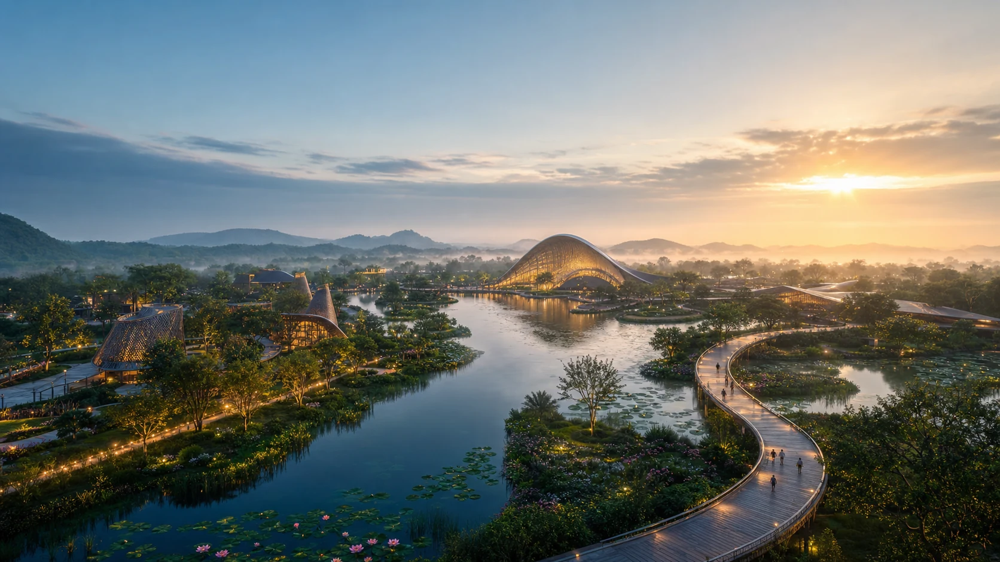
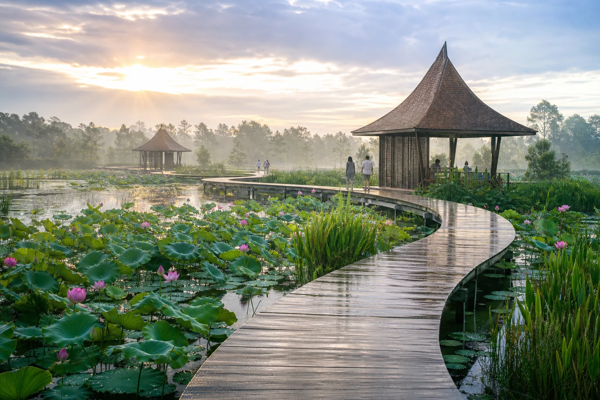
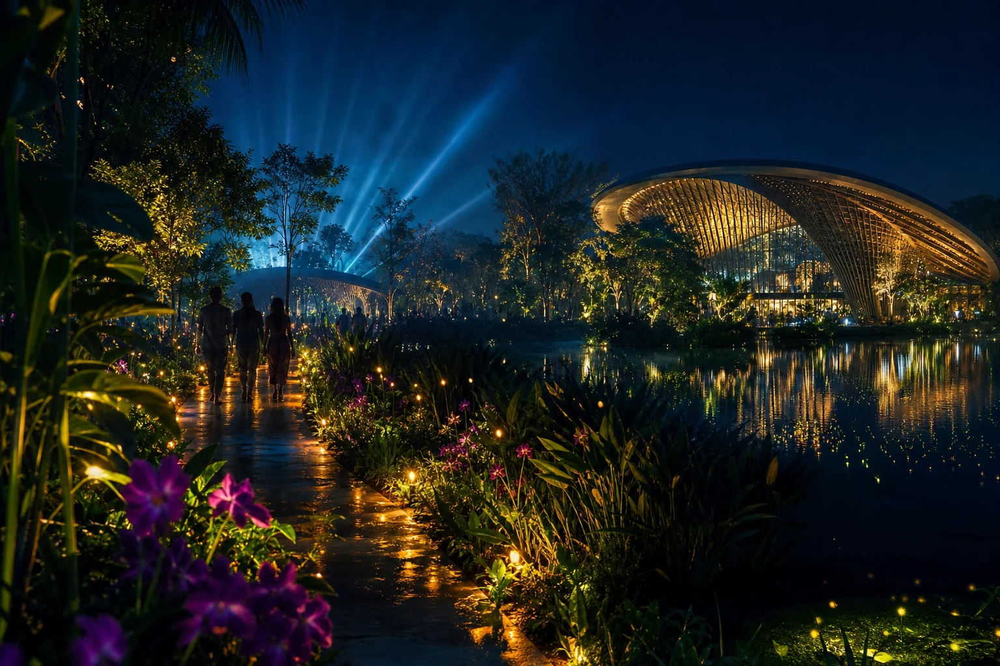
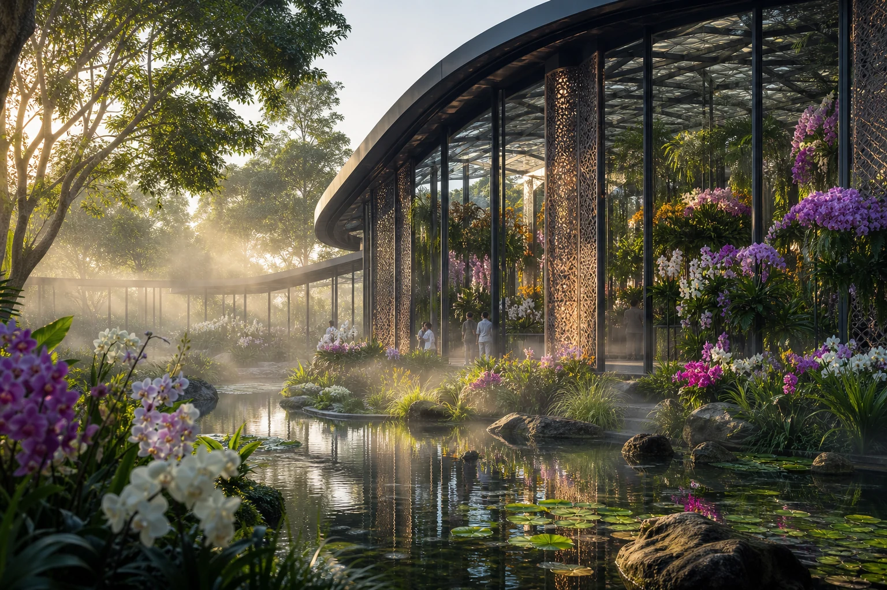

01 / 03
สายน้ำ
ฟื้นคืนพื้นที่ชุ่มน้ำ ให้ธรรมชาติเป็นโครงสร้างพื้นฐานของเมือง



เมื่อผู้คน สายน้ำ และพืชพรรณ กลับมาเติบโตไปด้วยกัน พบกับมหกรรมพืชสวนโลกบนพื้นที่ชุ่มน้ำครั้งแรกของโลก
01แนวคิดมหกรรม
“Diversity of Life” คือคำชวนให้เราออกแบบอนาคตร่วมกัน ผ่านภูมิปัญญาท้องถิ่น นวัตกรรมสีเขียว และระบบนิเวศพื้นที่ชุ่มน้ำอันเปราะบาง
ค้นพบเรื่องราวของเราฟื้นคืนพื้นที่ชุ่มน้ำ ให้ธรรมชาติเป็นโครงสร้างพื้นฐานของเมือง
เชื่อมชุมชนอีสานสู่เครือข่ายความร่วมมือของผู้คนทั่วโลก
รักษาความหลากหลายทางชีวภาพ ด้วยองค์ความรู้และนวัตกรรม
02ข้อมูลจากเว็บไซต์ทางการ
ความหลากหลายแห่งสรรพชีวิต: สายสัมพันธ์แห่งผู้คน สายน้ำ และพืชพรรณ สู่การดำรงชีวิตที่ยั่งยืน
อ่านเพิ่มงานมหกรรมพืชสวนโลกจังหวัดอุดรธานี พ.ศ. 2569 สะท้อนวิสัยทัศน์ของโลกที่อยู่ร่วมกันอย่างกลมเกลียว แบ่งปันความอุดมสมบูรณ์จากแม่น้ำอันยิ่งใหญ่ ฟื้นสายสัมพันธ์แห่งมิตรภาพสู่อนุภาคลุ่มแม่น้ำโขง และเป็นงานพืชสวนโลกบนพื้นที่ชุ่มน้ำครั้งแรกของโลก
อ่านเพิ่มขอเรียนเชิญจัดสวนและนิทรรศการเข้าร่วมเป็นส่วนหนึ่งในงานมหกรรมพืชสวนโลกจังหวัดอุดรธานี พ.ศ. 2569
คู่มือผู้เข้าร่วม03สำรวจพื้นที่
เลือกโซนบนแผนที่เพื่อสำรวจประสบการณ์ที่เชื่อมต่อกันด้วยสายน้ำและเส้นทางสีเขียว
 Open full map
Open full map
04ไฮไลต์สวน
สามประสบการณ์เด่นที่พาเราเดินทางจากความงามของพืชพรรณ ไปสู่ความเข้าใจใหม่เกี่ยวกับโลกที่เราอาศัยอยู่

เรือนกระจกที่รวบรวมความงามของกล้วยไม้ไทยไว้ในม่านหมอกบางเบา
ทางเดินเหนือบึงบัวที่เผยให้เห็นความสัมพันธ์ของน้ำ พืช และสิ่งมีชีวิต
เมื่อราตรีเปลี่ยนพื้นที่ชุ่มน้ำให้กลายเป็นบทกวีของแสง เสียง และเงาสะท้อน
05โลกมาพบกันที่อุดรธานี
ชมแนวคิดสวนและนวัตกรรมพืชสวนจากนานาประเทศ ในพื้นที่แลกเปลี่ยนความรู้ที่เชื่อมโลกเข้าหากัน
06ปฏิทินประสบการณ์
ตั้งแต่พิธีเปิด นิทรรศการตามฤดูกาล เวิร์กช็อป จนถึงเทศกาลแสงยามค่ำคืน
เปิดประตูสู่ 134 วันแห่งความหลากหลาย พร้อมการแสดงสายน้ำ แสง และวัฒนธรรมจากชุมชนอุดรธานี
กิจกรรมประจำวัน
07ภาพแห่งความทรงจำ
08เรื่องราวล่าสุด
09วางแผนการเดินทาง
พื้นที่ชุ่มน้ำหนองแด ตำบลกุดสระ อำเภอเมือง จังหวัดอุดรธานี เดินทางสะดวกจากสนามบินและใจกลางเมือง
ต.กุดสระ อ.เมืองอุดรธานี จ.อุดรธานี 41000
รถรับส่งสาธารณะและเส้นทางจักรยานเชื่อมต่อพื้นที่งาน
เปิดทุกวันตลอด 134 วันของมหกรรม
ด้วยความร่วมมือจาก